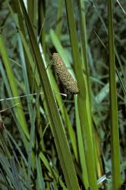

Acoraceae
Sweet Flag Family
Acoraceae is a unique family of monocotyledonous flowering plants containing only a single genus, Acorus. These perennial, rhizomatous herbs are adapted to wetlands and are known for their aromatic, iris-like leaves and distinctive flower spike (spadix). Phylogenetically, Acoraceae holds immense importance as the sister group to all other living monocots.
Overview
The Acoraceae family consists solely of the genus Acorus, which comprises 2 to 4 species depending on taxonomic interpretation (A. calamus, A. americanus, A. gramineus, and sometimes A. triqueter). These plants, commonly known as Sweet Flag, are native to temperate and subtropical regions of North America and Asia but have become naturalized in wetland habitats across Europe and other parts of the world. They thrive in marshes, swamps, along streams, and at the edges of ponds and lakes.
Acorus species are characterized by their creeping, branched rhizomes from which arise long, erect, sword-shaped leaves that resemble those of irises. A key feature is the sweet, aromatic scent released when the leaves or rhizomes are crushed. The unique inflorescence, a spadix, appears laterally on the stem due to a large, erect, leaf-like spathe that continues upwards beyond it.
Historically and culturally, Acorus calamus has been used in traditional medicine across various cultures, as a flavoring agent, and for its aromatic properties. However, concerns exist regarding the potential toxicity of β-asarone found in certain populations (especially Asian and European polyploid varieties). Ecologically, Acorus species contribute to wetland biodiversity and can help stabilize shorelines.
Quick Facts
- Scientific Name: Acoraceae
- Common Name: Sweet Flag family
- Number of Genera: 1 (Acorus)
- Number of Species: 2-4
- Distribution: Native to North America and Asia; naturalized widely in temperate/subtropical wetlands
- Evolutionary Group: Monocots - Acorales (Sister to all other monocots)
Key Characteristics
Growth Form and Habit
Acoraceae are perennial, herbaceous monocots that grow from stout, branched, aromatic rhizomes. They are emergent aquatic or wetland plants, forming colonies through rhizome spread.
Leaves
Leaves are basal, arising in two ranks from the rhizome. They are long, linear or sword-shaped, and parallel-veined. A key feature is that they are unifacial (developing from only the abaxial, or lower, leaf surface, resulting in leaves oriented edgewise to the stem) and equitant (flattened and overlapping in two ranks at the base, similar to Iris leaves). Leaves are sweetly aromatic when crushed.
Inflorescence
The inflorescence is a spadix – a cylindrical, fleshy spike covered densely with numerous small flowers. The spadix appears laterally because it arises from the side of a flowering stem (scape) below a large, erect, leaf-like spathe. This spathe is essentially indistinguishable from the vegetative leaves and continues the line of the scape, making the spadix seem to emerge from the side of a leaf.
Flowers
Flowers are small, bisexual, actinomorphic (radially symmetrical), sessile, and tightly packed on the spadix. They are typically yellowish-green or brownish.
- Perianth: Consists of 6 small, scale-like tepals arranged in two whorls of three.
- Androecium: 6 stamens, opposite the tepals, with flattened filaments and anthers dehiscing via longitudinal slits.
- Gynoecium: A single superior ovary composed of 2-3 fused carpels, with 2-3 locules containing several ovules each. The style is short or absent, and the stigma is minute.
Fruits and Seeds
The fruit is a fleshy or somewhat dry berry, typically angular due to crowding on the spadix, and often reddish when mature. Each berry contains 1 to a few seeds. Fruiting can be rare, especially in sterile polyploid populations of Acorus calamus common in Europe.
Seeds are small, oblong, and contain both endosperm and perisperm (nutritive tissues).
Chemical Characteristics
Acoraceae are known for producing aromatic essential oils, responsible for the characteristic sweet scent. Key compounds include sesquiterpenoids. Notably, some populations of Acorus calamus (especially triploid and tetraploid cytotypes found in Asia and Europe) produce significant amounts of β-asarone, a phenylpropanoid with potential carcinogenic and toxic effects. Diploid North American populations (A. americanus or diploid A. calamus) generally lack or have very low levels of β-asarone. They notably lack the ethereal oils found in Araceae.
Field Identification
Identifying Acorus (the only genus in Acoraceae) relies on its distinct combination of leaf morphology, habitat, scent, and inflorescence structure:
Primary Identification Features
- Habitat: Found exclusively in wetlands (marshes, swamps, stream edges, pond margins).
- Leaves: Iris-like, unifacial, equitant (overlapping at base), sword-shaped, arising from a rhizome.
- Aromatic Scent: Crushed leaves or rhizomes release a distinct sweet fragrance.
- Spadix Inflorescence: Presence of a cylindrical spike (spadix) covered in tiny flowers.
- Lateral Spadix Appearance: The spadix appears to emerge from the side of a leaf, as the leaf-like spathe continues directly above it.
Secondary Identification Features
- Rhizome: Thick, creeping rhizome visible at the base of the plant or in the substrate.
- Flower details: Tiny, 6-tepaled, 6-stamened bisexual flowers densely packed on the spadix (requires close look).
- Lack of showy spathe: Unlike many Araceae (Arum family), the spathe is green and leaf-like, not petal-like or enclosing the spadix.
Seasonal Identification Tips
- Growing Season: Leaves are present throughout the growing season. The aromatic quality is always present.
- Flowering Season: Typically late spring to early summer. The spadix is the most definitive feature when present.
- Fruiting Season: Fruits (berries) may develop later in the summer but are often absent or inconspicuous, especially in introduced populations.
Common Confusion Points
- Iridaceae (Iris family): Irises also have equitant, sword-shaped leaves and grow in wet areas. However, Irises have large, showy flowers with 3 stamens and an inferior ovary, and lack the characteristic sweet scent and spadix of Acorus.
- Typhaceae (Cattail family): Cattails (Typha) grow in similar habitats but have thick, cylindrical, brown flower spikes (separate male section above female section) and rounded, not flattened, leaves. They lack the aromatic scent.
- Araceae (Arum family): Some Araceae have spadix inflorescences (e.g., Jack-in-the-pulpit, Skunk Cabbage), but the spathe is usually more distinct, often colored or hood-like, and typically encloses or subtends the spadix terminally. Leaf shape and arrangement usually differ, and the scent, if present, is often unpleasant (e.g., Skunk Cabbage) or different. Araceae possess ethereal oils, absent in Acoraceae.
- Juncaceae (Rush family) & Cyperaceae (Sedge family): Some rushes and sedges grow in wetlands and have linear leaves, but their leaves are typically channeled or rounded, not unifacial and equitant. Their flowers are small, wind-pollinated, and arranged in very different types of inflorescences (not a spadix).
Field Guide Quick Reference
Look For:
- Wetland habitat
- Iris-like, equitant leaves
- Sweet aromatic scent when crushed
- Cylindrical spadix (flower spike)
- Spadix appearing lateral below leaf-like spathe
- Rhizomatous growth
Key Variations:
- Species differ slightly in size, leaf width, spadix length (A. gramineus is smaller/grass-like)
- Presence/absence of β-asarone varies by cytotype/species
- Fruiting frequency varies
Notable Examples
As the family contains only one genus, Acorus, the examples focus on the commonly recognized species within it:

Acorus calamus
Common Sweet Flag / Calamus
The most widely known species, distributed across Asia and naturalized in Europe and parts of North America. Often exists as sterile polyploid varieties (triploid, tetraploid) which contain significant levels of β-asarone. Used extensively in traditional medicine and for its aroma, but subject to restrictions in some regions due to toxicity concerns.

Acorus americanus
American Sweet Flag
Native to North America, particularly northern regions. This species is typically diploid and fertile, lacking or having very low levels of β-asarone. It is often considered the non-toxic counterpart to Eurasian A. calamus and was historically used by Native Americans. Some botanists treat it as a variety or subspecies of A. calamus.

Acorus gramineus
Grassy-leaved Sweet Flag / Japanese Rush
Native to East Asia (Japan, China, Philippines, etc.). This species is smaller and more grass-like than A. calamus, with narrower leaves. Often cultivated as an ornamental pond plant or groundcover in moist areas, with several cultivars available (e.g., 'Ogon', 'Variegatus'). Also used in traditional medicine.
Phylogeny and Classification
Acoraceae holds a critically important position in the evolution of flowering plants. Molecular phylogenetic studies using DNA sequence data from multiple genes have consistently shown that Acoraceae, in its own order Acorales, represents the earliest diverging lineage among all living monocotyledons. This means Acorus is the sister group to a massive clade containing all other ~70,000 monocot species (including grasses, lilies, orchids, palms, aroids, etc.).
This phylogenetic placement implies that the ancestors of Acorus branched off before the diversification of all other major monocot lineages. Consequently, Acoraceae retains some morphological and anatomical features considered ancestral or primitive within monocots, alongside its own specialized traits (like the unifacial leaves and spadix). Its unique position makes it invaluable for comparative studies aiming to reconstruct the characteristics of the earliest monocots and understand the evolutionary pathways leading to the vast diversity seen in the group today.
Position in Plant Phylogeny
- Kingdom: Plantae
- Clade: Angiosperms (Flowering plants)
- Clade: Monocots
- Order: Acorales
- Family: Acoraceae
Evolutionary Significance
Acoraceae is exceptionally significant from an evolutionary perspective:
- Sister Group to all other Monocots: Its phylogenetic position provides a crucial reference point for understanding the origin and early evolution of monocots, one of the largest and most economically important groups of plants.
- Window into Ancestral Traits: Studying Acorus helps researchers infer characteristics of the last common ancestor of all monocots, distinguishing between features that arose early versus those that evolved within specific monocot lineages.
- Unique Combination of Features: It possesses a mix of potentially ancestral traits (e.g., aspects of vessel anatomy, presence of perisperm) and derived specializations (e.g., unifacial leaves, spadix, essential oils).
- Monotypic Order: Representing an entire order (Acorales) by itself underscores its evolutionary distinctiveness and long period of independent evolution.